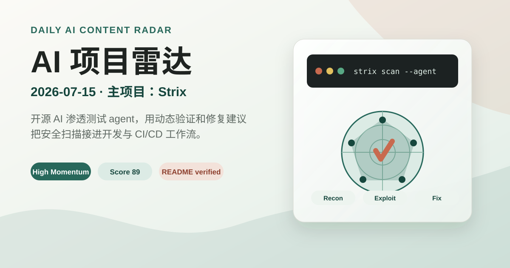

Daily English AI Content Radar
AI 项目雷达
2026-07-15 版本聚焦近期活跃、README 可核验的 AI agent、AI 编程和工作流基础设施项目。五轴仍用于快速判断：热度、增速、可用、新颖、活跃。
2026 年 7 月 15 日
更新窗口：近 24 小时信号
更新窗口：近 24 小时信号
打开原始项目
今日项目
数据源：GitHub 仓库搜索、项目 README 与仓库元数据。评分是雷达筛选判断，不等同于投资、采购或安全结论。